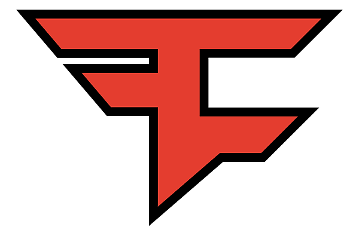
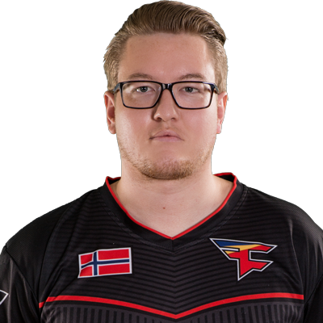
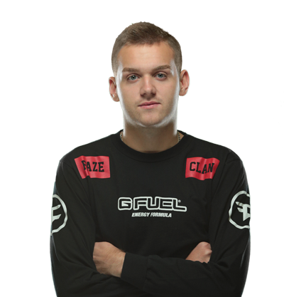
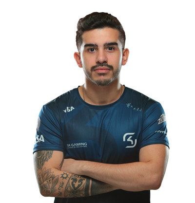
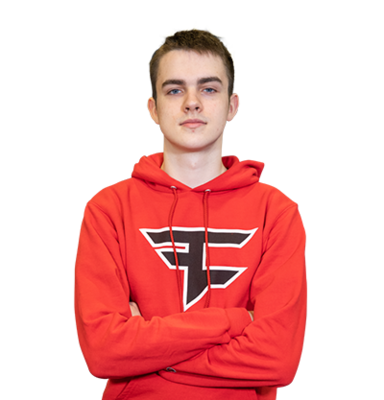
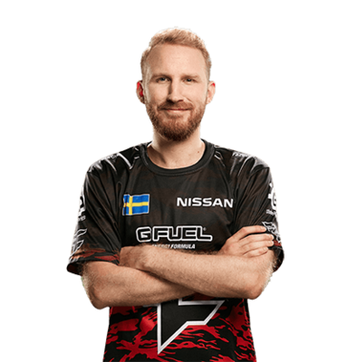

Faze

rain
Ховард " rain " Nygaard (родился 27 августа 1994 года) является норвежским профессиональным игроком Counter-Strike: Global Offensive и бывшим игроком Counter-Strike: Source , который в настоящее время играет за FaZe Clan в качестве входного мошенника . Он - самый продолжительный член линейки, сыгравший с тех пор, как команда впервые сформировалась под флагом Team Kinguin .
NiKo
Никола « НИКО » Ковач (ранее известный как « NiKolinho » и « nIKOLINHO ») (родился 16 февраля 1997) является боснийским профессиональным Counter-Strike: Global Offensive и бывшим профессиональным Counter-Strike игрок , который в настоящее время играет роль входов ведущий игры и входной фреггер для FaZe Clan . Он также двоюродный брат человека . NiKo широко считается одним из самых механически одаренных игроков в CS: GO и неоднократно боролся за звание лучшего игрока в мире на протяжении всей своей карьеры, чаще всего противУкраинский игрок s1mple .
coldzera
Марсело " coldzera " Дэвид (родился 31 октября 1994 года) - бразильский профессиональный игрок Counter-Strike: Global Offensive , который в настоящее время играет за клан FaZe . Он широко считается одним из лучших игроков за все время в CS: GO , будучи на первом месте в рейтинге HLTV два года подряд в 2016 и 2017 годах.
broky
Хельвийс " Broky " Saukants (родился 14 февраля 2001 года) является профессиональным игроком Counter-Strike: Global Offensive в Латвии , который в настоящее время играет за клан FaZe .
olofmeister
Олоф " olofmeister " Кайбьер Густафссон (ранее известный как " olofm ") (родился 31 января 1992 года) [1] - шведский профессиональный игрок Counter-Strike: Global Offensive и бывший игрок Counter-Strike , который в настоящее время неактивен в клане FaZe. , Это происходит после его легендарного 3-летнего пребывания в Fnatic , в течение которого он выиграл две специальности; ESL One: Katowice 2015 и ESL One: Cologne 2015 , среди множества других международных турниров, был назван лучшим игроком мира 2015 года. Во время своего пребывания в Fnatic он отдыхал из-за травмы запястья и не мог играть за свою команду - новость впервые появилась в марте 2016 года, но Олоф временно отключился в апреле 2016 года. Никлас " PlesseN " Плессен стоял в для Олофа большую часть времени, до того, как Джон " пошёл ", Эрикссон был позже взят на замену . Fnatic объявили о своем возвращении в состав команды в июне 2016 года, так как Олоф был готов снова играть. [2] Его пребывание там продолжалось до августа 2017 года, когда он был поднят кланом FaZe . [3] В апреле 2018 года он взял личный отпуск и был на скамейке в течение месяца. [4] [5]Из-за личных проблем он снова был на скамейке в июне 2018 года и вернулся через месяц. [6]
